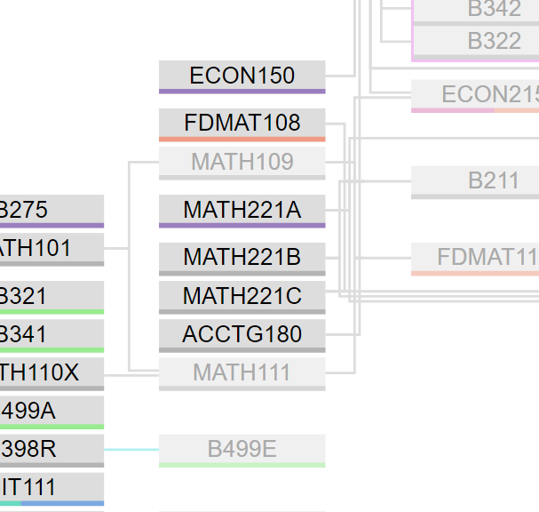
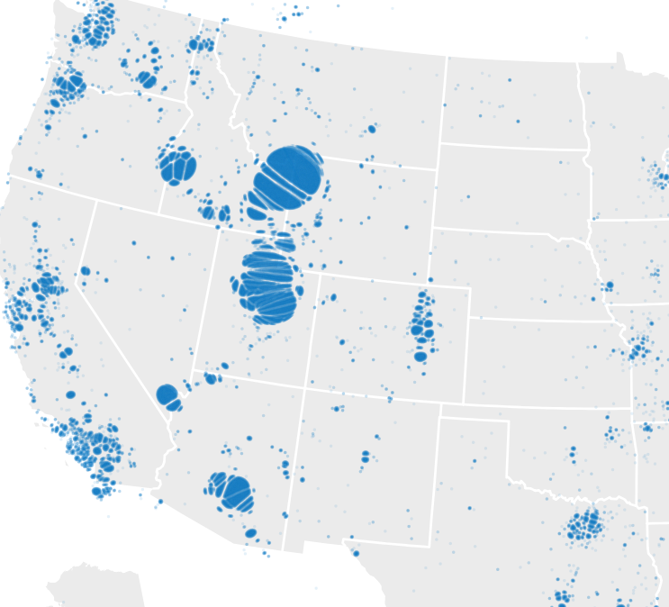
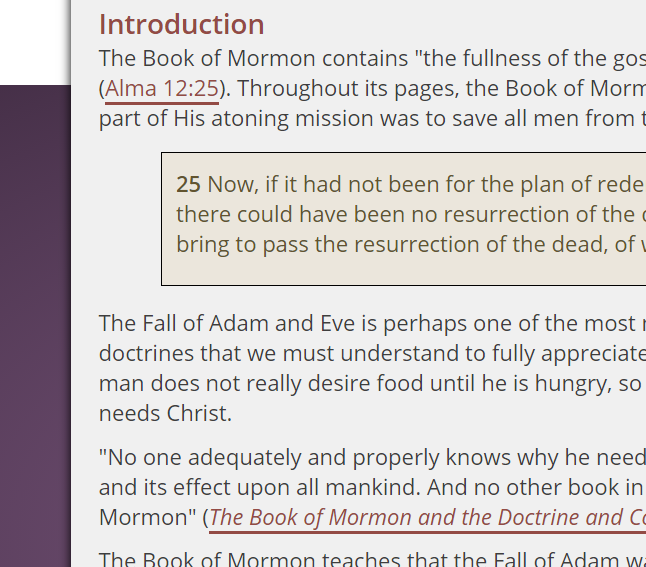

@benjameep
Benjamin Earl

Program Visualization
Previous work of mine (the BYU-I Course Requisite Graph) had gotten into the hands of Academic Advising, and they brought me in to see if I could improve on the concept. So, I learned D3, poured over a bunch of scholarly articles on how to generate visualizations of DAGs (Directed Acyclic Graphs). After 10 different attempts and almost declaring it impossible three times (never out loud), something started to form. This project still has a lot of refining to go but is on track to become accepted by the university and used by the entire school.
d3
Canvas Api Wrapper
My school is shifting over to using Instructure's Canvas as their LMS. As our dev team deals primarily with the LMS we use their API a lot. So, I volunteered to write a NodeJs wrapper for the Canvas API. I was able to abstract 70% of the Canvas API and optimized parallelism to be almost twice as fast our previous API wrapper. It is now used by our entire team and has 12-50 downloads per week on npm.
api
NodeJs

Techops Toggl Tracker
Our dev team works on so many small projects that it is difficult for each person to remember all the projects they have going on, let alone all the projects for the entire team. Our team also lacks a system of tracking how much time is put into each project. So I created a Single Page Application that completely client-side (our team doesn't have a server) Oauth's with Github, retrieves data from Toggl's API, updates firebase, and displays with d3 when a project is worked on, the bandwidth it is taking of the team, and history of the project. This project has been put on hold for now but will be picked back up and implemented soon.
webpack
ejs
CORS
api
d3
Primer
oauth2
firebase

Dot Code
I have long been fascinated by ciphers and codes. And especially like ciphers where anyone can figure out by staring at for long enough. I had the idea to create this sort of connect the dots cipher which achieves that goal. The problem is that it is painstakingly slow to create by hand. But by using d3-simulation I can generate all of the random scattered particles that the cipher required.
d3
d3-simulation

BYU-I Student Map
The BYU-I public student directory includes the home town for most students. So I scraped the public student directory (no easy task) and sent their home town to one of Google’s apis to look up the latitude and longitude of each. Instead of the traditional grouping where two nodes near each other form a single larger node. I used d3-simulation to give each node collision and gravity towards where they are supposed to be. This resulted in high-density cities near each other to get squished, and I had to cache to locations of each node because it takes so long for the simulation to run. So If I were to do this project again, I would probably go the other route.
web scraping
d3
d3-geo
d3-simulation
topojson

Courseplan
Revisiting the partially created UI and course data I wrote scrapers for with Webpack. This was one of the first times I had worked with webpack and struggled to get semantic-ui to cooperate with webpack. Hence why everything is compiled into the bundle.js except for the semantic-ui files. I have to run the scrapers manually to update the data, but those updates get set to firebase which the site pulls off of so at least there are no hard-coded data files. But all in all, I'm pleased with the result especially as the project works completely independent of the School's systems
webpack
semantic-ui
babel
ejs
firebase
web scraping

FDHUM 110
My FDHUM110 class was organized so horribly in the LMS, that I decided to make a better one. I scraped all the links through D2L's API and based only on the name of the files (that's all I had to go off of) figured out which files were information files for other assignments, which of the three sections it goes under, and what type of assignment it was. So thankfully all that information was in the file name, but still quite a hassle to parse. I posted a link to it on the course's discussion board and half a dozen people commented saying that they liked it. So hopefully it helped others out as well.
semantic-ui
web scraping
ejs
obj-iterate
I often get frustrated that in JS it is difficult to iterate through an object and even more difficult to 'reduce' or 'filter' the entries in an object. So, I built this library to supply that functionality for me.
npm

Scripture Injection
I prefer to listen to reading assignments in school, so I will copy and paste the reading into a text to speech program. But for one of my religion classes the reading was mixed with scripture references which were also required reading. So not only did you have to switch back and forth from the reading to the scriptures, but it also meant that I couldn't copy and paste all of the text into the speech program. So, I wrote a script which found the scripture references, scraped the scripture off of lds.org, and injected it into the reading underneath the corresponding reference.
web scraping

Twitter Queueit SMS
The Queue-It system redirects traffic off websites which are having a large event into an offsite queue then slowly feeds them back. My challenge was to find when these events occur. As it is often frustrating to users I figured that people probably rant about it on social media. So, I set up a server to search Twitter for mentions of Queue-it every ten minutes, then send me a text whenever it finds a new mention. It worked pretty well after I told it to stop waking me up in the middle of the night.
aws
twillio
twitter
api

Word Sorter
A friend of mine was working on a project where they wanted to take a phrase then rearrange the words into a different message. This is surprisingly difficult to do on paper, so they asked me if I could make a program which could help with the process. So, I wrote this small site which resembles those magnet words on the refrigerator. Where you enter the message on the top, and they appear on a magnet board which you can rearrange and group together, then write your reconfigured message in the second box and the words disappear off the board.
canvas

BYU-I Course Requisite Graph
One of my goals in scraping data off the BYU-I Course Catalog was to create a little requisite chart for each course. The little charts never formed to my liking, but I realized that it was possible for me to create a chart for every single course in the school. It took a long time to render, so all the node positions are cached, but is quite interesting to poke around in.

Gradplanner
I got the idea in my head that I could build a better course catalog. That thought almost killed me. After many failed attempts of getting program data, I found that the school moved their course catalog from a large pdf to a website. This allowed me to scrape the data, but still was no easy feat. It required many recursive queries, trimming and reorganizing the resulting tree, and calculating the credit counts based on the logical structure. This project never reached the vision that I had for it but the effort payed off as it formed the basis of the Requisite Graph, Courseplan, and Program Visualization
puppeteer
web scraping

Falling Block Maze
There was this game where you are moving around in a maze, but you can't change your direction unless your resting against a block. I don't know if this type of maze has a name, but I wanted to recreate it with the extra challenge of the mazes being auto-generated. The algorithm to generate these mazes took the good portion of a summer to figure out, and of course actually programming it always brings its own challenges. The easy part was creating the actual game. As it turns out humans are really bad at this type of maze, because the correct way to go is often not in the direction of the target. So, it results in just moving around randomly until you hit the target. Cool algorithm, bad game.
canvas

Word Manipulation Path Finder
In discrete math, we played a game where we tried to find the shortest path of words between which only one letter can be changed (ex. life line mine mind) so of course I had to write a program to play the game. But as an extra challenge to myself I did it in python which I was not as familiar with.
python
night-map
Before we discovered puppeteer for browser automation, we used nightmarejs which frankly lives up to its name. One of the most difficult things to do in nightmare was perform some action for each element of in an array. Because that required chaining the asynchronous actions together and collecting the resulting figures. So, I wrote a small plugin which makes doing that a a lot easier.
nightmare
plugin
npm

Combinatorics Clock
I realized that 12 is half of !4 and 60 is half of !5. Which means that I can create a clock in which the hours, minutes, and seconds are represented by a specific ordering of 4 or 5 nodes. I created an algorithm to reference a specific order of nodes, so it is possible to calculate the time (described in the readme) it is just really difficult.
jquery

Square Pie Chart
In discrete math we learned about Huffman trees. Which is where you combine the smallest two elements until everything is a single tree. I realized that one application of this is to create a square pie chart (later I learned that they are actually called tree graphs, but I like my name better). Each rectangle's area corresponds to its proportion of the whole, just like a normal pie chart.
canvas

Monopoly Game Simulator
This is identical to the previous Predictopoly project, except for I wanted to try figure out what the correspondence was between the average profit and chance of winning the game. So, I added a bunch of code to simulate a game, with players moving around the board and paying each other. Then ran 500 games (more than that causes quite a bit of lag) to see the probability of the player ending with the most money.
Adobe Api Runner
This was one of my first projects working for campus. I was tasked with creating a tool which generated and synced the Adobe connect groups for more than a 100 course sections. Learned to use the Adobe API, and how to construct a large project and proper interface.
nodejs
api
Adobe Connect

Android Lock Combinations
I came across a video on YouTube which showed every possible android lock combination. The animation is mesmerizing, and I wanted to recreate the video in a website so that I could use it as a lock screen on my computer. I still pull this site up occasionally, and just stare at it, because it is so much fun to watch.
snap
svg